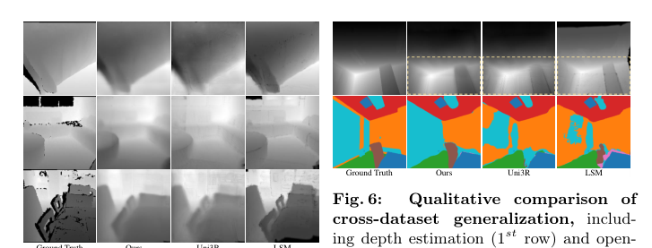

UniSem：从稀疏未展示图像中进行广义语义 3D 重建
简单摘要
从多视角2D图像联合重建和理解3D场景（语义感知3D重建）是计算机视觉中长期存在的挑战。近期NeRF和3DGS的进步显著改善了语义感知3D重建，一条主流路线将2D视觉语言基础模型特征蒸馏入辐射场实现开放词汇3D理解，但此类方法通常依赖多阶段预处理和逐场景优化，限制了可扩展性。最近的研究转向可泛化的前馈重建，但现有可泛化语义3DGS方法面临两个关键挑战：过完备的像素粒度高斯引入深度噪声；仅2D提升限制语义泛化——纯粹提升视角局部2D分割器特征仅提供弱3D一致监督。为此本文提出UniSem，通过误差感知高斯丢弃（EGD）和混合训练课程（MTC）联合提升深度质量和语义精度。


核心创新
1. 提出误差感知高斯丢弃（EGD），为每个高斯分配与重建误差相关的丢弃概率，训练中抑制冗余高斯造成的梯度噪声。
2. 提出混合训练课程（MTC），训练初期使用纯2D提升语义进行监督，随后逐步混合模型预测的可迁移3D语义线索。
3. EGD和MTC协同设计使几何稳定性与语义泛化能力互为增强，首次在统一框架中同时解决过完备高斯噪声和2D语义提升有限两大问题。
4. 无需3D真值监督即可获得改善的深度估计，具有较高的数据效率和泛化能力。
技术细节
对于每个像素对齐的高斯 ，我们计算其相关像素位置 处的重建误差。(a) 为了稳定深度估计，我们引入了误差感知高斯丢失（EGD），它计算每个像素的重建误差并通过渐进式、误差引导的丢失来抑制过于密集的高斯。作者这样设计，是为了把这一节的输入、约束和输出关系讲清楚。
4 方法论
给定一组稀疏的未设置输入图像，UniSem 在单次前向传递中预测 3D 高斯场景表示（第 1 节）。UniSem 结合了可泛化语义 3DGS 中的两个关键组件。错误感知高斯辍学（EGD）用于错误引导容量控制以稳定几何结构（第 2 节）。
4.1 前馈语义高斯分布
输入图像被分为补丁令牌，并与可学习的相机固有令牌连接。这些令牌由具有 DINOv2 架构的 ViT 主干进行处理，以进行特征提取。然后，这些特征由跨视图 Transformer 编码器（类似于 VGG-T ）处理，该编码器在视图内自注意力和跨视图注意力之间交替。作者这样设计，是为了把这一节的输入、约束和输出关系讲清楚。
$$ G_{k} = \{\mu_{k}, s_{k}, r_{k}, \alpha_{k}, c_{k}, f_{k}\}, $$
放在“方法论”这一部分看，这条式子重点不是孤立地罗列符号，而是交代 G k 如何承接前面的输入并把结果交给后续步骤。
4.2 错误感知高斯 Dropout (EGD)
围绕 4.2 错误感知高斯 Dropout (EGD)，这一节先处理的是 对于每个像素对齐的高斯 ，我们计算其相关像素位置 处的重建误差。作者这样设计，是为了先把输入表示、约束条件或中间状态整理成后续模块能直接使用的形式。
接着，论文还会处理 然后，我们对所有像素对齐高斯函数的重建误差进行归一化。它的作用不是重复上一层计算，而是把这一阶段得到的结果继续传给后面的更新、渲染或决策步骤。
接着，论文还会处理 我们为每个高斯分配一个丢弃概率，该概率随着其归一化重建误差而减小。它的作用不是重复上一层计算，而是把这一阶段得到的结果继续传给后面的更新、渲染或决策步骤。
接着，论文还会处理 我们对伯努利掩模进行采样来决定是否参与渲染和梯度反向传播。它的作用不是重复上一层计算，而是把这一阶段得到的结果继续传给后面的更新、渲染或决策步骤。
$$ E_k = \| \hat{I}_k - I_k \|_1 , $$
这条式子是在定义一个可直接计算的中间量：右侧把相对位置、方向、权重或比例关系组合起来，左侧则把这个组合结果记成后续模块要反复使用的变量。
$$ \tilde{E}_k = \frac{E_k - \min_j E_j}{\max_j E_j - \min_j E_j + \epsilon}, $$
放在“方法论”这一部分看，它重点在定义或约束 E k 这一项。这条式子是在定义一个可直接计算的中间量：右侧把相对位置、方向、权重或比例关系组合起来，左侧则把这个组合结果记成后续模块要反复使用的变量。
$$ p_k^{\text{drop}} = {\eta}_t ( 1 - \tilde{E}_k )^{\beta}, $$
放在“方法论”这一部分看，它重点在定义或约束 p k drop 这一项。这条式子是在定义一个可直接计算的中间量：右侧把相对位置、方向、权重或比例关系组合起来，左侧则把这个组合结果记成后续模块要反复使用的变量。
$$ \eta_t = \eta_{\min} + \frac{1}{2}(\eta_{\max} - \eta_{\min}) [1 - \cos(2\pi \frac{t}{T})], $$
放在“方法论”这一部分看，它重点在定义或约束 eta t 这一项。这条式子是在定义一个可直接计算的中间量：右侧把相对位置、方向、权重或比例关系组合起来，左侧则把这个组合结果记成后续模块要反复使用的变量。
$$ m_k = \mathds{1}[\xi_k > p_k^{\text{drop}}], \qquad \xi_k \sim \mathcal{U}(0,1), $$
放在“方法论”这一部分看，这条式子重点不是孤立地罗列符号，而是交代 m k 如何承接前面的输入并把结果交给后续步骤。
4.3 混合培训课程（MTC）
我们引入了混合训练课程（MTC），它通过模型涌现的 3D 语义先验来补充 2D 提升监督，以实现混合监督。渲染的语义特征是通过与像素重叠的混合高斯计算的。具体来说，对于稀疏源视图（ ）和目标视图（ ，从源视图中的中间帧中选择，如 ）。作者这样设计，是为了把这一节的输入、约束和输出关系讲清楚。
为了考虑可靠性，每个高斯均按其局部几何密度进行加权，通过平均成对距离测量。因此，位于更密集和结构更稳定区域的高斯函数受到更高的重视，从而产生更可靠的学习信号。通过注入源自 3D 可泛化模型的语义，我们的模型有效地增强了语义一致性、完整性和跨场景泛化。
$$ \hat{{F}} = \sum_{i \in \mathcal{N}} {{f}}_i \alpha_i \prod_{j=1}^{i-1} (1 - \alpha_j), $$
放在“方法论”这一部分看，它重点在定义或约束 F 这一项。这条式子描述了多个分量的聚合或逐步合成过程。它通常表示模型如何把局部贡献、概率权重或多项损失累积成最终结果。
$$ \mathcal{L}_{\text{sem}}^{\text{2D}} = \mathcal{L}_{\cos} \big(\mathcal{F}_{MLP}(\hat{{{F}}}), \tilde{F} \big), $$
放在“方法论”这一部分看，它重点在定义或约束 L sem 2D 这一项。这条式子给出了训练阶段的优化目标。阅读时可以先看左侧到底在约束什么，再区分右侧每一项对应的是重建误差、正则项还是辅助监督。
$$ {E}^{\text{tar}}(x) = 1 - \text{cos} \big( \mathcal{F}_{\text{MLP}}(\hat{F}^{\text{tar}}(x)), \tilde{F}^{\text{tar}}(x) \big). $$
这条式子是在定义一个可直接计算的中间量：右侧把相对位置、方向、权重或比例关系组合起来，左侧则把这个组合结果记成后续模块要反复使用的变量。
$$ \mathbf{M}^{\text{tar}}, \{\mathbf{M}^{\text{s}_i}\}_{i=1}^{n} = \text{SAM2} (I^{\text{tar}}, \{I^{\text{s}_i}\}_{i=1}^{n}, \mathbf{x}_{\text{max}}^{\text{tar}}), $$
放在“方法论”这一部分看，这条式子重点不是孤立地罗列符号，而是交代 M tar , M s i i 如何承接前面的输入并把结果交给后续步骤。
4.4 模型训练
我们的模型通过最小化复合损失进行端到端训练，这增强了外观、语义和几何结构的保真度。我们结合使用 L1 和 LPIPS 感知损失来确保渲染视图与输入图像匹配。我们没有像 中那样纯粹提取 2D LSeg 特征，而是利用提出的混合训练课程（等式 1）。
实验结论
为了公平比较，所有方法均以 256 256 分辨率进行评估。我们还评估了 8 视图和 16 视图输入下的泛化能力。我们使用 PSNR、SSIM 和 LPIPS 评估新颖的视图合成。
这源于混合训练课程，它注入 3D 语义先验并抑制嘈杂的 2D 不一致，从而实现更准确的对象分割并改进跨场景泛化。相比之下，UniSem 在不到一秒的时间内执行无姿态重建，同时获得有竞争力或更好的渲染质量。此外，与专门用于视图合成的强前馈方法（AnySplat）相比，UniSem 匹配 PSNR/SSIM 并提高了 LPIPS（表）。
5.1 实验装置
为了公平比较，所有方法均以 256 256 分辨率进行评估。我们还评估了 8 视图和 16 视图输入下的泛化能力。我们使用 PSNR、SSIM 和 LPIPS 评估新颖的视图合成。
| < 1.3cm< | 1.4cm< 1.4cm< | 1.3cm< 1.3cm< 1.3cm< 1.3cm< 3 2*Type | Method | Recon. Time | Depth Estimation | Text-Driven Seg. | Novel View Synthesis | ||||
|---|---|---|---|---|---|---|---|---|---|
| — | — | — | Rel | RMSE | mIoU | mAcc | PSNR | SSIM | LPIPS |
| Per-Scene | LSeg | N/A | N/A | N/A | 0.4819 | 0.7927 | N/A | N/A | N/A |
| — | DFF | 1m21s | N/A | N/A | 0.4037 | 0.6755 | 19.86 | 0.6650 | 0.3629 |
| — | Feat3DGS | 18m21s | N/A | N/A | 0.4223 | 0.7174 | 24.49 | 0.8132 | 0.2293 |
| Feed-Forward | LSM | 0.108s | 4.74 | 18.90 | 0.5078 | 0.7686 | 24.39 | 0.8072 | 0.2506 |
| — | SpatialSplat | 0.071s | N/A | N/A | 0.5587 | 0.7924 | 25.46 | 0.8045 | 0.2046 |
| — | Uni3R | 0.162s | 4.85 | 15.37 | 0.5474 | 0.8198 | 25.37 | 0.8671 | 0.1412 |
| — | lightblueOurs | 0.162s | 3.84 | 13.13 | 0.5677 | 0.8345 | 25.58 | 0.8723 | 0.1397 |
| 3 | — | ||||||||
| < c c c c c c | 0.8cm< c c c c c c c c 3 2*Method | 8 View Inputs | 16 View Inputs | ||||||||||||
|---|---|---|---|---|---|---|---|---|---|---|---|---|---|---|
| — | Rel | RMSE | mIoU | mAcc | PSNR | SSIM | LPIPS | Rel | RMSE | mIoU | mAcc | PSNR | SSIM | LPIPS |
| Uni3R | 4.46 | 15.04 | 0.521 | 0.807 | 24.122 | 0.830 | 0.251 | 4.81 | 14.57 | 0.522 | 0.795 | 23.070 | 0.807 | 0.299 |
| lightblue Ours | 3.73 | 12.94 | 0.533 | 0.821 | 24.520 | 0.843 | 0.162 | 4.08 | 13.41 | 0.552 | 0.832 | 23.668 | 0.823 | 0.184 |
| 3 | — | |||||||||||||
5.2 与最先进方法的比较
在表中，与之前的方法相比，UniSem 的 Rel 显着降低了 19.0%（从 4.74 降至 3.84，缩放 100）。这源于混合训练课程，它注入 3D 语义先验并抑制嘈杂的 2D 不一致，从而实现更准确的对象分割并改进跨场景泛化。此外，与专门用于视图合成的强前馈方法（AnySplat）相比，UniSem 匹配 PSNR/SSIM 并提高了 LPIPS（表）。
| < 1.4cm< 1.4cm< 3 Setting | PSNR | SSIM | LPIPS |
|---|---|---|---|
| AnySplat | 25.559 | 0.8707 | 0.241 |
| Ours | 25.579 | 0.8723 | 0.140 |
| 3 | — |
| < 1.0cm< 1.0cm< 1.0cm< 1.0cm< 1.0cm< 3 Setting | Rel | RMSE | mIoU | mAcc | PSNR | SSIM |
|---|---|---|---|---|---|---|
| lightblue Ours (Full) | 3.84 | 13.13 | 0.568 | 0.835 | 25.58 | 0.872 |
| w/o EGD | 4.47 | 14.30 | 0.557 | 0.831 | 25.29 | 0.869 |
| w/o Error-aware | 3.94 | 13.31 | 0.561 | 0.832 | 25.35 | 0.870 |
| w/o Cosine-cycle | 3.95 | 13.26 | 0.555 | 0.830 | 25.36 | 0.868 |
| w/o MTC | 4.09 | 13.68 | 0.555 | 0.819 | 25.36 | 0.869 |
| w/o L^3D_p | 3.92 | 13.29 | 0.563 | 0.834 | 25.46 | 0.870 |
| w/o Geo-aware | 3.87 | 13.26 | 0.565 | 0.835 | 25.54 | 0.871 |
| 3 | — |
5.3 消融研究
在表中，删除错误感知高斯丢失 (EGD) 会持续降低所有指标，深度下降最大，表明 EGD 正则化并稳定了高斯优化。3D 对应损失（无）及其几何感知权重（无地理感知）都有助于持续改进，验证了它们在可靠的特征对齐中的作用。这表明该改进不仅仅归因于 VGGT 几何监督，而且 EGD p。
| < 1.0cm< 1.0cm< 1.0cm< 1.0cm< 1.0cm< 1.0cm< 3 Method | Rel | RMSE | mIoU | mAcc | PSNR | LPIPS |
|---|---|---|---|---|---|---|
| lightblue Cosine-cycle | 3.84 | 13.13 | 0.568 | 0.835 | 25.58 | 0.1397 |
| Fix Schedule | 3.95 | 13.26 | 0.555 | 0.830 | 25.36 | 0.1455 |
| Step Schedule | 3.89 | 13.24 | 0.565 | 0.834 | 25.50 | 0.1417 |
| 3 | — |
5.4 局限性分析
UniSem 主要在室内基准上进行训练和评估，这些基准比大型模型（例如 MASt3R 、 VGGT ）使用的数据集更小且多样性更少。因此，我们目前的主张侧重于稀疏、无条件输入下的室内泛化，并将在未来探索向野外领域（室外、极端照明、动态场景）的转移。我们希望在未来通过探索无掩模语义先验来解决这个问题。
理解评价
如果把这篇论文放回问题背景里看，它真正的价值在于：同时，它们仅依赖 2D 分割器功能进行语义提升，这提供了较弱的 3D 级别和有限的可泛化监督，导致新颖场景中的 3D 语义不完整。这说明作者不是只补一个局部模块，而是在重新组织问题该怎样被解决。
最能支撑这个判断的，还是实验给出的证据：为了解决这些问题，我们提出了 UniSem，这是一个统一的框架，通过两个关键组件共同提高深度准确性和语义泛化。换句话说，这些设计并不只是概念上更完整，而是实实在在改变了最终结果。
当然，它离真正成熟的方案还有距离：当前方案的局限在于它仍然受制于计算资源、输入质量或场景复杂度，距离真正稳健的大规模部署还有差距。后续更值得继续推进的方向，是 未来继续提升效率、泛化能力以及在更复杂场景下的稳定性。